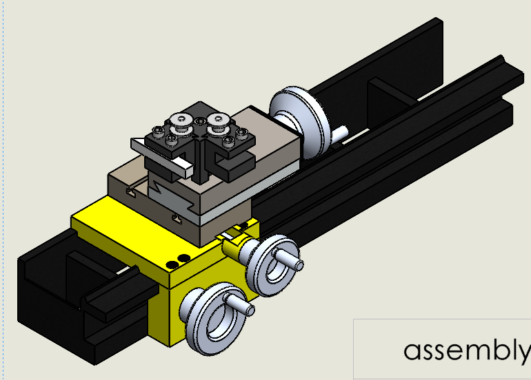

Lathe Machine Reverse Engineering
Reverse-engineered a real lathe machine by taking dimensional measurements of its physical components and recreating the machine as a detailed 3D CAD assembly in SolidWorks.
Process: Physical measurement → Component modeling → Assembly → Exploded view → Motion study